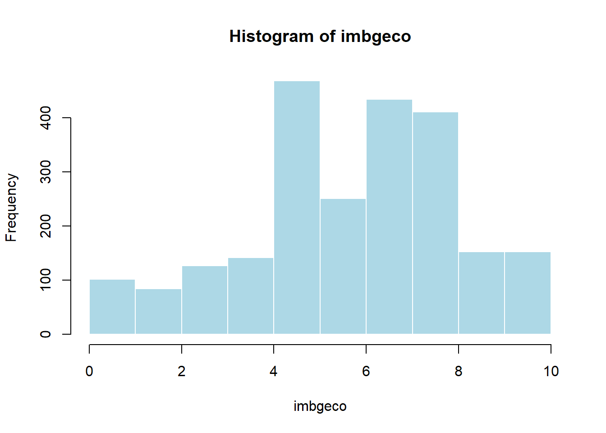
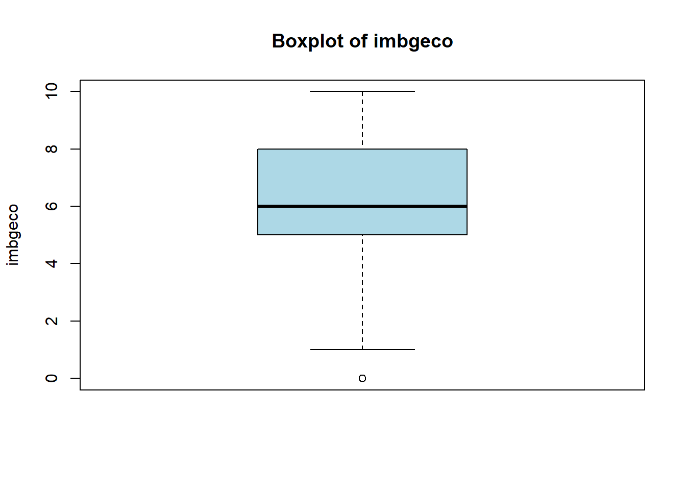

# none global variables definedSummary Statistics and Hypothesis Test
Background Information
This is an R Markdown document. Instructions for writing these documents and background information can be found in the book written by Xie, Allaire, and Grolemund (2018) When you execute code within the document, the results appear beneath the code. This is an R Markdown document. Instructions for writing these documents and background information can be found in the book written by Xie, Allaire, and Grolemund (2018) When you execute code within the document, the results appear beneath the code. This file contains summary statistics, respectively the analysis step (confirmatory and exploratory analyses). Files are split into multiple subfiles like data processing and data analyses steps, which follows the classical data-analysis pipeline (see Peng and Matsui 2016; Wickham and Grolemund 2017).
Global Variables
get packages, raw data, functions
### install and load packages
# if packages are not already installed, the function will install and activate them
usePackage <- function(p) {
if (!is.element(p, installed.packages()[,1]))
install.packages(p, dep = TRUE, repos = "http://cran.us.r-project.org")
require(p, character.only = TRUE)
}
usePackage("haven") # Import SPSS and other formats
usePackage("tidyverse") # Data manipulation
usePackage("psych") # Psychometric analyses
usePackage("moments") # Descriptive stats: skewness, kurtosis
usePackage("stargazer") # Output formatting
usePackage("report") # APA style reports
# usePackage("mice") # Get missing data patterns
usePackage("DT") # dynamic tables
usePackage("writexl") # write data to .xlsx file
## exemplify Mahalanobis Distance
usePackage("mvtnorm")
usePackage("plotly")
usePackage("MASS")
##
usePackage("ggstatsplot")
usePackage("BayesFactor")
usePackage("rstatix")
usePackage("car")
usePackage("report")
rm(usePackage)
### load data files
## change working directory
setwd("data")
## load data
dat <- readRDS(file = "dat_SPSS_subset.rds")
### load functions
# print(getwd())
setwd("../functions")
for(i in 1:length(dir())){
# print(dir()[i])
source(dir()[i], encoding = "utf-8")
}
rm(i)Get an overview of your data
# Dataset dimensions and structure
dim(dat) # Number of rows and columns[1] 2358 21names(dat) # Variable names [1] "imbgeco" "imueclt" "imwbcnt" "imsmetn"
[5] "imdfetn" "impcntr" "trstprl" "trstlgl"
[9] "trstplc" "trstplt" "trstprt" "trstep"
[13] "trstun" "lrscale" "stflife" "rlgdgr"
[17] "gndr" "mean_MigEnrich" "mean_MigAllow" "mean_Trust"
[21] "lrscale_dummy" dplyr::glimpse(dat) # Compact summary of variable types and contentsRows: 2,358
Columns: 21
$ imbgeco <dbl+lbl> NA, 10, 9, 4, 8, 8, 10, 8, 7, 7, 0, 9, 10,…
$ imueclt <dbl+lbl> 8, 5, 8, 4, 8, 8, 10, 8, 7, 4, 0, 9, 10,…
$ imwbcnt <dbl+lbl> 5, 5, 8, 3, 8, 7, 6, 8, 7, 5, 0, 5, 5, 5, 5, 7, 4, …
$ imsmetn <dbl> 4, 4, 4, 3, 4, 3, 3, 4, 4, 4, 2, 3, 4, 3, 3, 4, 4, 3, 4…
$ imdfetn <dbl> 4, 4, 4, 3, NA, 3, 3, 4, 3, 3, 2, 3, 3, 3, 3, NA, NA, 3…
$ impcntr <dbl> 4, 4, 4, 3, NA, 4, 2, 4, NA, 2, 2, 2, 3, 3, 3, 3, NA, 1…
$ trstprl <dbl+lbl> 2, 7, 3, 3, 4, 9, 10, 5, 5, 7, NA, 6, 6,…
$ trstlgl <dbl+lbl> 4, 8, 5, 4, 5, 7, 10, 7, 8, 8, 5, 9, 7,…
$ trstplc <dbl+lbl> 5, 8, 6, 4, 7, 7, 10, 7, 9, 8, 7, 9, 7,…
$ trstplt <dbl+lbl> 0, 6, 3, 3, 5, 8, 10, 5, 5, 6, 3, 5, 6,…
$ trstprt <dbl+lbl> 2, 6, 5, 3, 5, 8, 4, 5, 5, 6, 1, 5, 3, 7, 9, 4, 3, …
$ trstep <dbl+lbl> 3, 4, 5, 2, 4, 10, 10, 6, 3, 7, 3, 5, 5,…
$ trstun <dbl+lbl> 0, 5, 6, 2, 5, 10, 10, 6, 7, 7, NA, 7, 5,…
$ lrscale <dbl+lbl> 5, 5, 3, 2, 1, 5, 5, 2, 3, 5, 1, 4, 5, 6, 4, 3, 0, …
$ stflife <dbl+lbl> 10, 8, 8, 6, 9, 9, 10, 8, 4, 9, 10, 9, 9,…
$ rlgdgr <dbl+lbl> 9, 7, 9, 1, 5, 9, 5, 0, 3, 9, 5, 0, 10,…
$ gndr <fct> Female, Female, Female, Male, Female, Female, Female, M…
$ mean_MigEnrich <dbl> 6.500000, 6.666667, 8.333333, 3.666667, 8.000000, 7.666…
$ mean_MigAllow <dbl> 4.000000, 4.000000, 4.000000, 3.000000, 4.000000, 3.333…
$ mean_Trust <dbl> 2.285714, 6.285714, 4.714286, 3.000000, 5.000000, 8.428…
$ lrscale_dummy <fct> middle, middle, middle, middle, left, middle, middle, m…str(dat) # Internal structure of the datasettibble [2,358 × 21] (S3: tbl_df/tbl/data.frame)
$ imbgeco : dbl+lbl [1:2358] NA, 10, 9, 4, 8, 8, 10, 8, 7, 7, 0, 9, 10, ...
..@ label : chr "Immigration bad or good for country's economy"
..@ format.spss: chr "F8.0"
..@ labels : Named num [1:14] 0 1 2 3 4 5 6 7 8 9 ...
.. ..- attr(*, "names")= chr [1:14] "Bad for the economy" "1" "2" "3" ...
$ imueclt : dbl+lbl [1:2358] 8, 5, 8, 4, 8, 8, 10, 8, 7, 4, 0, 9, 10, ...
..@ label : chr "Country's cultural life undermined or enriched by immigrants"
..@ format.spss: chr "F8.0"
..@ labels : Named num [1:14] 0 1 2 3 4 5 6 7 8 9 ...
.. ..- attr(*, "names")= chr [1:14] "Cultural life undermined" "1" "2" "3" ...
$ imwbcnt : dbl+lbl [1:2358] 5, 5, 8, 3, 8, 7, 6, 8, 7, 5, 0, 5, 5, ...
..@ label : chr "Immigrants make country worse or better place to live"
..@ format.spss: chr "F8.0"
..@ labels : Named num [1:14] 0 1 2 3 4 5 6 7 8 9 ...
.. ..- attr(*, "names")= chr [1:14] "Worse place to live" "1" "2" "3" ...
$ imsmetn : num [1:2358] 4 4 4 3 4 3 3 4 4 4 ...
$ imdfetn : num [1:2358] 4 4 4 3 NA 3 3 4 3 3 ...
$ impcntr : num [1:2358] 4 4 4 3 NA 4 2 4 NA 2 ...
$ trstprl : dbl+lbl [1:2358] 2, 7, 3, 3, 4, 9, 10, 5, 5, 7, NA, 6, 6, ...
..@ label : chr "Trust in country's parliament"
..@ format.spss: chr "F8.0"
..@ labels : Named num [1:14] 0 1 2 3 4 5 6 7 8 9 ...
.. ..- attr(*, "names")= chr [1:14] "No trust at all" "1" "2" "3" ...
$ trstlgl : dbl+lbl [1:2358] 4, 8, 5, 4, 5, 7, 10, 7, 8, 8, 5, 9, 7, ...
..@ label : chr "Trust in the legal system"
..@ format.spss: chr "F8.0"
..@ labels : Named num [1:14] 0 1 2 3 4 5 6 7 8 9 ...
.. ..- attr(*, "names")= chr [1:14] "No trust at all" "1" "2" "3" ...
$ trstplc : dbl+lbl [1:2358] 5, 8, 6, 4, 7, 7, 10, 7, 9, 8, 7, 9, 7, ...
..@ label : chr "Trust in the police"
..@ format.spss: chr "F8.0"
..@ labels : Named num [1:14] 0 1 2 3 4 5 6 7 8 9 ...
.. ..- attr(*, "names")= chr [1:14] "No trust at all" "1" "2" "3" ...
$ trstplt : dbl+lbl [1:2358] 0, 6, 3, 3, 5, 8, 10, 5, 5, 6, 3, 5, 6, ...
..@ label : chr "Trust in politicians"
..@ format.spss: chr "F8.0"
..@ labels : Named num [1:14] 0 1 2 3 4 5 6 7 8 9 ...
.. ..- attr(*, "names")= chr [1:14] "No trust at all" "1" "2" "3" ...
$ trstprt : dbl+lbl [1:2358] 2, 6, 5, 3, 5, 8, 4, 5, 5, 6, 1, 5, 3, 7, 9, 4, 3, 8,...
..@ label : chr "Trust in political parties"
..@ format.spss: chr "F8.0"
..@ labels : Named num [1:14] 0 1 2 3 4 5 6 7 8 9 ...
.. ..- attr(*, "names")= chr [1:14] "No trust at all" "1" "2" "3" ...
$ trstep : dbl+lbl [1:2358] 3, 4, 5, 2, 4, 10, 10, 6, 3, 7, 3, 5, 5, ...
..@ label : chr "Trust in the European Parliament"
..@ format.spss: chr "F8.0"
..@ labels : Named num [1:14] 0 1 2 3 4 5 6 7 8 9 ...
.. ..- attr(*, "names")= chr [1:14] "No trust at all" "1" "2" "3" ...
$ trstun : dbl+lbl [1:2358] 0, 5, 6, 2, 5, 10, 10, 6, 7, 7, NA, 7, 5, ...
..@ label : chr "Trust in the United Nations"
..@ format.spss: chr "F8.0"
..@ labels : Named num [1:14] 0 1 2 3 4 5 6 7 8 9 ...
.. ..- attr(*, "names")= chr [1:14] "No trust at all" "1" "2" "3" ...
$ lrscale : dbl+lbl [1:2358] 5, 5, 3, 2, 1, 5, 5, 2, 3, 5, 1, 4, 5, ...
..@ label : chr "Placement on left right scale"
..@ format.spss: chr "F8.0"
..@ labels : Named num [1:14] 0 1 2 3 4 5 6 7 8 9 ...
.. ..- attr(*, "names")= chr [1:14] "Left" "1" "2" "3" ...
$ stflife : dbl+lbl [1:2358] 10, 8, 8, 6, 9, 9, 10, 8, 4, 9, 10, 9, 9, ...
..@ label : chr "How satisfied with life as a whole"
..@ format.spss: chr "F8.0"
..@ labels : Named num [1:14] 0 1 2 3 4 5 6 7 8 9 ...
.. ..- attr(*, "names")= chr [1:14] "Extremely dissatisfied" "1" "2" "3" ...
$ rlgdgr : dbl+lbl [1:2358] 9, 7, 9, 1, 5, 9, 5, 0, 3, 9, 5, 0, 10, ...
..@ label : chr "How religious are you"
..@ format.spss: chr "F8.0"
..@ labels : Named num [1:14] 0 1 2 3 4 5 6 7 8 9 ...
.. ..- attr(*, "names")= chr [1:14] "Not at all religious" "1" "2" "3" ...
$ gndr : Factor w/ 2 levels "Male","Female": 2 2 2 1 2 2 2 1 1 1 ...
$ mean_MigEnrich: num [1:2358] 6.5 6.67 8.33 3.67 8 ...
$ mean_MigAllow : num [1:2358] 4 4 4 3 4 ...
$ mean_Trust : num [1:2358] 2.29 6.29 4.71 3 5 ...
$ lrscale_dummy : Factor w/ 3 levels "left","middle",..: 2 2 2 2 1 2 2 2 2 2 ...head(dat) # Preview first observations# A tibble: 6 × 21
imbgeco imueclt imwbcnt imsmetn imdfetn impcntr trstprl trstlgl trstplc
<dbl+lbl> <dbl+l> <dbl+l> <dbl> <dbl> <dbl> <dbl+l> <dbl+l> <dbl+l>
1 NA 8 [8] 5 [5] 4 4 4 2 [2] 4 [4] 5 [5]
2 10 [Good for … 5 [5] 5 [5] 4 4 4 7 [7] 8 [8] 8 [8]
3 9 [9] 8 [8] 8 [8] 4 4 4 3 [3] 5 [5] 6 [6]
4 4 [4] 4 [4] 3 [3] 3 3 3 3 [3] 4 [4] 4 [4]
5 8 [8] 8 [8] 8 [8] 4 NA NA 4 [4] 5 [5] 7 [7]
6 8 [8] 8 [8] 7 [7] 3 3 4 9 [9] 7 [7] 7 [7]
# ℹ 12 more variables: trstplt <dbl+lbl>, trstprt <dbl+lbl>, trstep <dbl+lbl>,
# trstun <dbl+lbl>, lrscale <dbl+lbl>, stflife <dbl+lbl>, rlgdgr <dbl+lbl>,
# gndr <fct>, mean_MigEnrich <dbl>, mean_MigAllow <dbl>, mean_Trust <dbl>,
# lrscale_dummy <fct>Univariate summary statistics
Descriptive Statistics: Continuous Variables
# Identify continuous variables (numeric or integer)
continuous_vars <- names(dat)[sapply(dat, is.numeric)]
# Calculate descriptive statistics using base R
summarize_continuous <- function(x) {
x <- na.omit(x)
c(
Mean = mean(x),
Median = median(x),
Mode = as.numeric(names(which.max(table(x)))), # assumes unimodal
SD = sd(x),
Min = min(x),
Max = max(x),
Skewness = moments::skewness(x), # still needs moments for distribution shape
Kurtosis = moments::kurtosis(x) # still needs moments for distribution shape
)
}
# Apply function across all continuous variables
continuous_summary <- t(sapply(dat[continuous_vars], summarize_continuous))
# Display rounded results
round(continuous_summary, 2) Mean Median Mode SD Min Max Skewness Kurtosis
imbgeco 6.13 6.00 5.00 2.33 0 10 -0.53 2.97
imueclt 6.02 6.00 5.00 2.52 0 10 -0.44 2.58
imwbcnt 5.35 5.00 5.00 2.24 0 10 -0.22 2.97
imsmetn 3.33 3.00 3.00 0.68 1 4 -0.76 3.37
imdfetn 2.92 3.00 3.00 0.77 1 4 -0.33 2.71
impcntr 2.84 3.00 3.00 0.82 1 4 -0.29 2.56
trstprl 5.10 5.00 5.00 2.48 0 10 -0.24 2.42
trstlgl 6.13 7.00 8.00 2.47 0 10 -0.57 2.66
trstplc 7.10 8.00 8.00 2.14 0 10 -1.00 3.87
trstplt 3.96 4.00 5.00 2.27 0 10 -0.02 2.43
trstprt 3.99 4.00 5.00 2.15 0 10 -0.03 2.49
trstep 4.56 5.00 5.00 2.40 0 10 -0.17 2.43
trstun 4.90 5.00 5.00 2.36 0 10 -0.24 2.56
lrscale 4.39 5.00 5.00 1.91 0 10 -0.06 3.49
stflife 7.66 8.00 8.00 1.96 0 10 -1.33 5.01
rlgdgr 4.16 5.00 0.00 3.05 0 10 0.06 1.84
mean_MigEnrich 5.83 6.00 5.00 2.07 0 10 -0.47 3.01
mean_MigAllow 3.03 3.00 3.00 0.66 1 4 -0.34 2.96
mean_Trust 5.12 5.29 5.14 1.82 0 10 -0.30 2.73Plots:
Histograms:
# Histogram for a continuous variable
hist(dat[[continuous_vars[1]]],
main = paste("Histogram of", continuous_vars[1]),
xlab = continuous_vars[1],
col = "lightblue",
border = "white")
Boxplots:
# Boxplot for a continuous variable
boxplot(dat[[continuous_vars[1]]],
main = paste("Boxplot of", continuous_vars[1]),
ylab = continuous_vars[1],
col = "lightblue",
horizontal = FALSE)
Combined Histogram + Empirical Density + Normal Curve:
# Select variable and remove missing values
x <- na.omit(dat[[continuous_vars[1]]])
# Plot histogram scaled to density
hist(x,
freq = FALSE,
main = paste("Histogram + Density + Normal Curve of", continuous_vars[1]),
xlab = continuous_vars[1],
col = "lightblue",
border = "white")
# Add empirical kernel density
dens <- density(x)
lines(dens, col = "blue", lwd = 2)
polygon(dens, col = rgb(0, 0, 1, 0.2), border = NA)
# Add normal curve with same mean and sd as x
x_vals <- seq(min(x), max(x), length = 100)
normal_curve <- dnorm(x_vals, mean = mean(x), sd = sd(x))
lines(x_vals, normal_curve, col = "red", lwd = 2, lty = 2)
abline(v=mean(x), col="black")
# Optional: add legend
legend("topright",
legend = c("Empirical Density", "Normal Curve"),
col = c("blue", "red"),
lwd = 2,
lty = c(1, 2),
bty = "n")Descriptive Statistics: Categorical Variables
# Identify categorical variables
categorical_vars <- names(dat)[sapply(dat, is.factor) | sapply(dat, is.character)]
# Frequency tables for each categorical variable
lapply(dat[categorical_vars], function(x) {
tbl <- table(x)
rel <- prop.table(tbl)
data.frame(
Category = names(tbl),
Frequency = as.integer(tbl),
Percentage = round(100 * rel, 1)
)
})$gndr
Category Frequency Percentage.x Percentage.Freq
1 Male 1212 Male 51.4
2 Female 1146 Female 48.6
$lrscale_dummy
Category Frequency Percentage.x Percentage.Freq
1 left 159 left 7.0
2 middle 1977 middle 87.4
3 right 125 right 5.5Plots:
Bar Plot:
# Bar plot for a categorical variable
barplot(table(dat[[categorical_vars[2]]]),
main = paste("Barplot of", categorical_vars[2]),
col = "lightgreen",
las = 2)Pie Chart:
# Pie chart for another categorical variable
pie(table(dat[[categorical_vars[2]]]),
main = paste("Pie Chart of", categorical_vars[2]),
col = rainbow(length(unique(dat[[categorical_vars[2]]]))))Bivariate summary statistics
Covariance and Correlation (Continuous–Continuous):
# Select two continuous variables to analyze
var1 <- continuous_vars[1]
var2 <- continuous_vars[2]
# Remove missing data
x <- na.omit(dat[[var1]])
y <- na.omit(dat[[var2]])
xy <- na.omit(data.frame(x = dat[[var1]], y = dat[[var2]]))
# Sample covariance
cov_xy <- cov(xy$x, xy$y)
cov_xy[1] 3.599212# Pearson correlation coefficient
cor_xy <- cor(xy$x, xy$y)
cor_xy[1] 0.6134426# Full covariance and correlation matrices
cov(dat[continuous_vars[1:5]], use = "pairwise.complete.obs") imbgeco imueclt imwbcnt imsmetn imdfetn
imbgeco 5.4073055 3.5992120 3.2652435 0.6181206 0.8841970
imueclt 3.5992120 6.3681580 4.1197986 0.7228706 1.0733592
imwbcnt 3.2652435 4.1197986 5.0034305 0.6087088 0.9570126
imsmetn 0.6181206 0.7228706 0.6087088 0.4596550 0.3270259
imdfetn 0.8841970 1.0733592 0.9570126 0.3270259 0.5965470cor(dat[continuous_vars[1:5]], use = "pairwise.complete.obs") imbgeco imueclt imwbcnt imsmetn imdfetn
imbgeco 1.0000000 0.6134426 0.6266536 0.3920591 0.4925580
imueclt 0.6134426 1.0000000 0.7288577 0.4223270 0.5495729
imwbcnt 0.6266536 0.7288577 1.0000000 0.4007091 0.5521797
imsmetn 0.3920591 0.4223270 0.4007091 1.0000000 0.6261877
imdfetn 0.4925580 0.5495729 0.5521797 0.6261877 1.0000000plots
Scatterplot (Continuous–Continuous):
# Basic scatterplot with regression line
plot(dat[[var1]], dat[[var2]],
main = paste("Scatterplot of", var1, "vs", var2),
xlab = var1,
ylab = var2,
pch = 19, col = "darkgray")
# Add linear regression line
abline(lm(dat[[var2]] ~ dat[[var1]]), col = "blue", lwd = 2)
legend("bottomright", legend = c("Linear Fit"),
col = c("blue"), lty = c(1, 2))Parallel Boxplots (Categorical–Continuous):
# Pick one categorical and one continuous variable
group_var <- categorical_vars[1]
metric_var <- continuous_vars[1]
# Boxplot grouped by category
boxplot(dat[[metric_var]] ~ dat[[group_var]],
main = paste("Boxplot of", metric_var, "by", group_var),
xlab = group_var,
ylab = metric_var,
col = "lightgray")# Specify variable names
cat1 <- categorical_vars[1]
cat2 <- categorical_vars[2]
outcome <- "trstlgl"
# Ensure categorical variables are factors
f1 <- as.factor(dat[[cat1]])
f2 <- as.factor(dat[[cat2]])
y <- dat[[outcome]]
# Drop rows with missing values
valid_rows <- complete.cases(f1, f2, y)
# Plot interaction
interaction.plot(f1[valid_rows], f2[valid_rows], y[valid_rows],
col = 1:length(levels(f2)), lty = 1, lwd = 2,
trace.label = cat2,
xlab = cat1,
ylab = paste("Mean", outcome),
main = paste("Interaction Plot:", outcome, "by", cat1, "and", cat2))# Create means table for combinations of the two categorical variables
group_means <- dat %>%
filter(!is.na(.data[[cat1]]), !is.na(.data[[cat2]]), !is.na(.data[[outcome]])) %>%
group_by(.data[[cat1]], .data[[cat2]]) %>%
summarise(
mean_outcome = mean(.data[[outcome]]),
n = n(),
.groups = "drop"
)
# Display the result
group_means# A tibble: 6 × 4
gndr lrscale_dummy mean_outcome n
<fct> <fct> <dbl> <int>
1 Male left 5.46 70
2 Male middle 6.42 1034
3 Male right 6.12 75
4 Female left 5.84 89
5 Female middle 6.03 937
6 Female right 4.98 49outlier analysis
A distinction is made between univariate and multivariate outliers, statistical procedures like structural equation modeling / confirmatory factor analysis are multivariate methods (several IVs and DVs), it is necessary to check the data for multivariate outliers. The Mahalanobis Distance is suitable for this:
## exemplify Mahalanobis Distance
sigma <- matrix(c(4,1,2,1,5,4,2,4,6), ncol = 3)
cov2cor(sigma) [,1] [,2] [,3]
[1,] 1.0000000 0.2236068 0.4082483
[2,] 0.2236068 1.0000000 0.7302967
[3,] 0.4082483 0.7302967 1.0000000means <- c(0, 0, 0)
set.seed(42)
n <- 1000
x <- rmvnorm(n = n, mean = means, sigma = sigma)
d <- data.frame(x)
p1 <- plot_ly(d, x = ~ X1, y = ~ X2, z = ~ X3,
marker = list(color = ~ X2,
showscale = TRUE)) %>%
add_markers()
p1## identify multivariate outliers
d$mahal <- mahalanobis(d, colMeans(d), cov(d))
d$p_mahal <- pchisq(d$mahal, df=2, lower.tail=FALSE)
d[d$p_mahal < .001, ] X1 X2 X3 mahal p_mahal
274 5.759481 -4.929943 -1.450310 16.41275 0.0002729077
330 7.398060 3.344539 4.741212 14.50380 0.0007088271
980 -6.295530 -5.365858 -4.367558 14.17879 0.0008339001in action:
# imsmetn Allow many/few immigrants of same race/ethnic group as majority
#> Now, using this card, to what extent do you think [country] should allow people of the same race or ethnic group as most [country]'s people to come and live here?
# imdfetn Allow many/few immigrants of different race/ethnic group from majority
#> All rounds: How about people of a different race or ethnic group from most [country] people?
# impcntr Allow many/few immigrants from poorer countries outside Europe
#> All rounds: How about people from the poorer countries outside Europe?
sel_var_MigAllow <- c("imsmetn", "imdfetn", "impcntr")
dat$mahal_MigAllow <- mahalanobis(x = dat[,sel_var_MigAllow], center = colMeans(dat[,sel_var_MigAllow], na.rm = TRUE), cov = cov(dat[,sel_var_MigAllow], use = "pairwise"))
dat$p_mahal_MigAllow <- pchisq(dat$mahal_MigAllow, df=3, lower.tail=FALSE)
## identify multivariate outliers
head(dat[dat$p_mahal_MigAllow < .001 & !is.na(dat$mahal_MigAllow), c(sel_var_MigAllow, "mahal_MigAllow", "p_mahal_MigAllow")])# A tibble: 6 × 5
imsmetn imdfetn impcntr mahal_MigAllow p_mahal_MigAllow
<dbl> <dbl> <dbl> <dbl> <dbl>
1 4 1 2 17.6 0.000543
2 4 4 1 25.5 0.0000122
3 1 1 3 22.0 0.0000638
4 4 1 1 17.4 0.000577
5 4 4 1 25.5 0.0000122
6 4 1 1 17.4 0.000577 recommended literature:
- Hong, M., Steedle, J. T., & Cheng, Y. (2020). Methods of Detecting Insufficient Effort Responding: Comparisons and Practical Recommendations. Educational and Psychological Measurement, 80(2), 312–345. https://doi.org/10.1177/0013164419865316
- Stosic, M. D., Murphy, B. A., Duong, F., Fultz, A. A., Harvey, S. E., & Bernieri, F. (2024). Careless Responding: Why Many Findings Are Spurious or Spuriously Inflated. Advances in Methods and Practices in Psychological Science, 7(1), https://doi.org/10.1177/25152459241231581
Hypothesis Test
t-tests
In this section we perform both independent-samples and paired-samples t-tests.
- Test Types & Data Formats
- Independent t-test: two separate groups, different participants in each.
- Long format: one outcome column + one grouping factor
- Wide format: two separate columns of scores
- Long format: one outcome column + one grouping factor
- Paired t-test: two measurements on the same participants (or matched pairs).
- Long format with
paired = TRUE
- Wide format with two columns and
paired = TRUE
- Long format with
- Independent t-test: two separate groups, different participants in each.
- Key Assumptions
- Measurement: Interval (or ratio) level
- Independence
- Independent t-test: observations between groups must be independent
- Paired t-test: differences within pairs must be independent
- Independent t-test: observations between groups must be independent
- Normality
- Independent: sampling distribution of group means ≈ normal
- Paired: distribution of paired differences ≈ normal
- Independent: sampling distribution of group means ≈ normal
- Homoscedasticity (Independent only)
- Equal variances across groups (Levene’s test)
- Measurement: Interval (or ratio) level
- Procedure
- Inspect data & check assumptions (e.g., Shapiro–Wilk, Levene).
- Run
t.test()with appropriate arguments.
- Interpret t-value, df, p-value, and report means ± SE.
- (Optional) Compute effect size (e.g., Cohen’s d).
- Inspect data & check assumptions (e.g., Shapiro–Wilk, Levene).
single steps:
Example Paired t-test:
- get an overview of your data:
data("sleep") # Student's Sleep Data
# ?sleep
DT::datatable(sleep, options = list(pageLength = 5))- compute summary statistics / visualize your data - simple plots:
## grouped boxplot
boxplot(sleep$extra ~ sleep$group)## compute mean deviations:
sleep1 <- with(sleep, extra[group == 2] - extra[group == 1])
summary(sleep1) Min. 1st Qu. Median Mean 3rd Qu. Max.
0.00 1.05 1.30 1.58 1.70 4.60 stripchart(sleep1, method = "stack", xlab = "hours",
main = "Sleep prolongation (n = 10)")
boxplot(sleep1, horizontal = TRUE, add = TRUE,
at = .6, pars = list(boxwex = 0.5, staplewex = 0.25))- compute summary statistics / visualize your data - more sophisticated plots (ggplot2):
ggplot_theme <- theme(axis.title.x = element_blank(),
axis.title.y = element_text(size=12),
axis.text.x = element_text(size=10,hjust=0.5,vjust=0.5,face="plain",
colour = "black"),
axis.text.y = element_text(size=12,face="plain", colour = "black"),
panel.border = element_blank(),
axis.line = element_line(colour = "black"),
panel.grid.major = element_blank(),
panel.grid.minor = element_blank(),
panel.background = element_blank(),
legend.position="none") # no legend
# grouped boxplot
ggplot(sleep, aes(x=group, y=extra)) +
geom_boxplot() + ggplot_theme- compute summary statistics / visualize your data - more sophisticated plots (ggstatsplot):
Using the type argument you can specify the statistical approach:
- “parametric”
- “nonparametric”
- “robust”
- “bayes”
## parametric t-test
p1 <- ggwithinstats(
data = sleep,
x = group,
y = extra,
type = "p",
effsize.type = "d",
conf.level = 0.95,
title = "Parametric test"
)
p1- check the assumptions of the paired sample t-test:
- Independence: Each observation should be independent of every other observation.
- Normality: The differences between the pairs should be approximately normally distributed.
- No Extreme Outliers: There should be no extreme outliers in the differences.
- Remark: quite often in practice, if n >> 30 this assumption is not checked
boxplot(sleep1) # to check outlier assumptionapplying Kolmogorov-Smirnov OR Shapiro-Wilk-Test to check normality; sample size sensitive: tests become more sensitive to minimal deviations from the normal distribution as sample size increases. Use Shapiro-Wilk normality test, we have the following hypotheses: * Null hypothesis: the data are normally distributed * Alternative hypothesis: the data are not normally distributed
# Shapiro-Wilk normality test for the differences
shapiro.test(sleep1)
Shapiro-Wilk normality test
data: sleep1
W = 0.82987, p-value = 0.03334because of the sample size sensitivity it is often better to visually check the assumption of normality:
sleep1_sc <- scale(sleep1) # z standardize mean differences
qqnorm(sleep1_sc) # QQ Plot
qqline(sleep1_sc) # vertical linehist(sleep1_sc, freq = FALSE, xlim = c(-3,3))
x<-seq(-4,+4,by=0.02)
curve(dnorm(x), add=TRUE)4 compute paired sample t-test:
## Formula interface
t.test(extra ~ group, data = sleep, paired = TRUE)
Paired t-test
data: extra by group
t = -4.0621, df = 9, p-value = 0.002833
alternative hypothesis: true mean difference is not equal to 0
95 percent confidence interval:
-2.4598858 -0.7001142
sample estimates:
mean difference
-1.58 outputs:
- t is the t-test statistic value
- df is the degrees of freedom
- p-value is the significance level of the t-test
- conf.int is the confidence interval (conf.int) of the mean differences at 95%
- sample estimates is the mean differences between pairs
## Traditional interface
with(sleep, ttestBF(extra[group == 1], extra[group == 2], paired=TRUE))Bayes factor analysis
--------------
[1] Alt., r=0.707 : 17.25888 ±0%
Against denominator:
Null, mu = 0
---
Bayes factor type: BFoneSample, JZSBF₁₀ = 17.26, indicating strong evidence for a mean difference
to evaluate Bayse factor, see: https://www.statlect.com/fundamentals-of-statistics/Jeffreys-scale
power analysis:
if you want to install / use / read more about G*Power: https://www.psychologie.hhu.de/arbeitsgruppen/allgemeine-psychologie-und-arbeitspsychologie/gpower
The standardized mean difference effect size for within-subjects designs is referred to as Cohen’s d_z, which can be computed as:
## by hand:
means <- with(sleep, tapply(extra, group, mean)) # get group means
md <- means[1]-means[2] # get mean difference
sleep_wide <- cbind(sleep$extra[sleep$group==1], sleep$extra[sleep$group==2])
(md / sqrt(sum(((sleep_wide[,1] - sleep_wide[,2])-md)^2) / (10-1))) 1
-1.284558 ## by package "rstatix"
sleep %>% cohens_d(extra ~ group, paired = TRUE)# A tibble: 1 × 7
.y. group1 group2 effsize n1 n2 magnitude
* <chr> <chr> <chr> <dbl> <int> <int> <ord>
1 extra 1 2 -1.28 10 10 large see: Lakens, D. (2013). Calculating and reporting effect sizes to facilitate cumulative science: A practical primer for t-tests and ANOVAs. Frontiers in Psychology, 4. https://www.frontiersin.org/articles/10.3389/fpsyg.2013.00863
“hands on”: one-way ANOVA
One-way ANOVA compares group means across a single categorical predictor. Below, we walk through the necessary steps to check assumptions, compute the ANOVA, and interpret results.
single steps:
# Select DV (continuous) and IV (categorical)
dv <- "trstlgl" # trust in legal system
iv <- "lrscale_dummy" # left-right dummy
dat_subset <- dat[,c(dv, iv)]
dim(dat_subset)[1] 2358 2dat_subset <- na.omit(dat_subset)
dim(dat_subset)[1] 2254 2# Ensure grouping variable is a factor
dat_subset[[iv]] <- factor(dat_subset[[iv]])- Inspect and Visualize Data
# Boxplot: trust in legal system by Left-Right Dummy
ggplot(dat_subset, aes_string(x = iv, y = dv)) +
geom_boxplot(fill = "lightgray") +
labs(title = "Trust in Legal System by Left-Right Dummy",
x = "Left Right Dummy", y = "Trust in Legal System") +
theme_minimal()Warning: `aes_string()` was deprecated in ggplot2 3.0.0.
ℹ Please use tidy evaluation idioms with `aes()`.
ℹ See also `vignette("ggplot2-in-packages")` for more information.- Check Assumptions
…
# Fit the ANOVA model
# QQ plot of residuals
# Shapiro–Wilk test on residuals
# Check Homogeneity of Variance
# Run the one-way ANOVA
# Welch's ANOVA (robust to unequal variances)
# Tukey HSD post hoc test (if applicable)
# APA-style reportReferences
Peng, Roger D., and Elizabeth Matsui. 2016. The Art of Data Science: A Guide for Anyone Who Works with Data. Lulu.com. https://bookdown.org/rdpeng/artofdatascience/.
Wickham, Hadley, and Garrett Grolemund. 2017. R for Data Science: Import, Tidy, Transform, Visualize, and Model Data. "O’Reilly Media, Inc.". https://r4ds.had.co.nz/.
Xie, Yihui, J. J. Allaire, and Garrett Grolemund. 2018. R Markdown: The Definitive Guide. New York: Chapman; Hall/CRC. https://doi.org/10.1201/9781138359444.